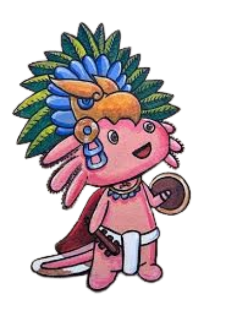

PREGUNTA DE CULTURA GENERAL
Cargando trivia...


Mueve al ajolote a los lados. ¡Presiona ESPACIO para disparar relámpagos de energía y destruir los bloques flotantes!
Debes darle 5 tiros al bloque que tenga la respuesta correcta. ¡Cuidado! Cada ráfaga que disparas te quita 1 segundo de tiempo. Romper la respuesta incorrecta te restará 5 segundos de golpe.
¡Consigue una racha de 3 aciertos para acelerar el juego y junta 10 puntos para ganar!
